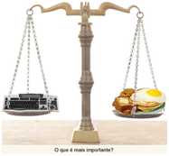
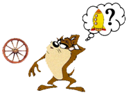

Dicas parte II(){
Dicas

4. Tenha prioridades: dê maior prioridade para as matérias que exigem uma maior atenção e concentração. Assim você distribui melhor o tempo gasto com cada disciplina.
5. Não desista: se você não foi obteve bom desempenho nas primeiras avaliações, não desanime. Ainda há tempo, corra atrás do prejuízo, você ainda é capaz de recuperá-lo. Procure colegas e professores, não tenha vergonha de pedir ajuda.

6. Ajude: sempre que for solicitado, tente ajudar os colegas, pois assim é uma maneira de rever o conteúdo. A dúvida de um colega pode ser relacionada a algum tópico que passou despercebido por você enquanto estudava.
7. Divirta-se: qualidade de vida também é importante. Assista um bom filme, ouça uma boa música, aproveite o fim de semana. Isso ajudará a manter o bom humor, diminuindo o stress acumulado durante a semana.
8. Pense no futuro: nunca esqueça o motivo de sua formação acadêmica. Pense no que você quer alcançar quando se formar. Mantenha o foco e motive-se para concluir seus estudos com êxito.
Pronto! Com um pouco de prática e organização é possível fazer o que às vezes parece impossível. Organize-se, coloque as dicas em prática e prepare-se para a luta do semestre!Referências
}